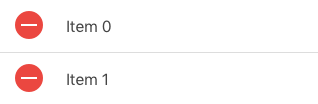

# Ionic Learn about [Ionic][ionic], an open source framework to build hybrid mobile applications based on [Cordova][cordova] and [Angular][angular]. **You will need** * [Node.js][node] 6+ * A free [Ionic account][ionic-account] (if you want to run your app with Ionic View) **Recommended reading** * [Angular](../angular/) --- class: center, middle, image-header ## What is Ionic? .breadcrumbs[<a href="#1">Ionic</a>] <p class='center'><img src='images/ionic.png' class='w70' /></p> --- ### Which OS should you support? .breadcrumbs[<a href="#1">Ionic</a> > <a href="#2">What is Ionic?</a>] <p class='center'><img src='images/mobile-platforms.jpg' class='w80' /></p> --- ### How can you deal with OS fragmentation? .breadcrumbs[<a href="#1">Ionic</a> > <a href="#2">What is Ionic?</a>] <p class='center'><img src='images/fragmentation.jpg' class='w80' /></p> --- ### Cordova .breadcrumbs[<a href="#1">Ionic</a> > <a href="#2">What is Ionic?</a>] .grid-30[ <p class='center'><img src='images/cordova.png' class='w100' /></p> ] .grid-70[ > "[Cordova][cordova] wraps your **HTML/JavaScript app** into a **native container** which can **access the device functions** of several platforms. > These functions are exposed via a unified JavaScript API, > allowing you to easily write one set of code to target nearly every phone or tablet on the market today and publish to their app stores." ] .container[ <p class='center'><img src='images/wait-what.jpg' width=200 /></p> <p class='center'>Wait... what?</p> ] --- #### Hybrid mobile applications .breadcrumbs[<a href="#1">Ionic</a> > <a href="#2">What is Ionic?</a> > <a href="#5">Cordova</a>] .grid-45[ Write your app with HTML, CSS and JavaScript, **like a website**: <img src='images/html-css-js.png' class='w100' /> ] .grid-10[ <p class='center' style='margin-top:150px;font-size:2em;'><i class='fa fa-arrow-right' aria-hidden='true'></i></p> ] .grid-45[ Embed it into a **native application**: <img src='images/native-app.png' class='w100' /> ] .container[ .grid-10[ <div class='center'> <i class='fa fa-camera x2' aria-hidden='true'></i> <br /> <i class='fa fa-location-arrow x2' aria-hidden='true'></i> <br /> <i class='fa fa-arrows-alt x2' aria-hidden='true'></i> </div> ] .grid-90[ Since you are writing a **web app**, you can access **web APIs** like the [geolocation API][geolocation-api]. But with Cordova, you can also access **device hardware** like the **camera** or the **accelerometer**, and you can do it **in JavaScript**. ] ] --- ### What about Ionic? .breadcrumbs[<a href="#1">Ionic</a> > <a href="#2">What is Ionic?</a>] .grid-35[ <img src='images/ionic.png' class='w100' style='margin-top:2em;' /> ] .grid-65[ > "Free and open source, Ionic offers a **library of mobile-optimized HTML, CSS and JS components**, gestures, and tools for building highly interactive apps. > Ionic utilizes **Angular** in order to create a framework most suited to develop rich and robust applications." ] .container[ Ionic is basically **Cordova** and **Angular** plugged together: <div class='center'> <img src='images/cordova.png' height=200 /> <img src='images/ng-js-ts-html.png' height=200 /> </div> ] --- #### What can I do with it? .breadcrumbs[<a href="#1">Ionic</a> > <a href="#2">What is Ionic?</a> > <a href="#7">What about Ionic?</a>] Ionic lets you build web apps that **look like native apps** with HTML, CSS and JavaScript: <p class='center'><img src='images/ionic-app.jpg' class='w80' /></p> --- class: center, middle, image-header ## Demo .breadcrumbs[<a href="#1">Ionic</a>] <p class='center'><img src='images/demo.jpg' /></p> --- ### Install Ionic .breadcrumbs[<a href="#1">Ionic</a> > <a href="#9">Demo</a>] Cordova and Ionic are both **npm packages**. Install them globally with the following command: ```bash $> npm install -g cordova ionic ``` You're now ready to use Ionic. Let's generate an app called `ionic-demo` with the `tabs` starter template: ```bash $> cd /path/to/projects $> ionic start ionic-tabs-demo tabs ``` The app should open in your browser. --- ### Starter templates .breadcrumbs[<a href="#1">Ionic</a> > <a href="#9">Demo</a>] You can also start with a much simpler template. This will generate an app with just one page and a title: ```bash $> cd /path/to/projects $> ionic start ionic-blank-demo blank ``` You will find many Ionic app templates shared by the community in the [Ionic market][ionic-market]. --- class: center, middle ## Basics of Ionic .breadcrumbs[<a href="#1">Ionic</a>] --- ### CSS components .breadcrumbs[<a href="#1">Ionic</a> > <a href="#12">Basics of Ionic</a>] Ionic has many [CSS components][ionic-css] you can use out of the box: .grid-65[ ```html <button class='`button button-positive`'> button-positive </button> ``` ] .grid-35[ ] .container[ .grid-65[ ```html <div class='`card`'> <div class='item item-text-wrap'> This is a basic Card which contains an item that has wrapping text. </div> </div> ``` ] .grid-35[ <img src='images/ionic-card.png' /> ] ] .container[ .grid-65[ ```html <div class='`list`'> <label class='item item-input'> <input type='text' placeholder='First Name'> </label> <label class='item item-input'> <input type='text' placeholder='Last Name'> </label> <label class='item item-input'> <textarea placeholder='Comments'></textarea> </label> </div> ``` ] .grid-35[ <img src='images/ionic-form.png' /> ] ] --- ### JavaScript components .breadcrumbs[<a href="#1">Ionic</a> > <a href="#12">Basics of Ionic</a>] Ionic also provides many [JavaScript components][ionic-js] that are in fact **Angular directives**. Here's an example of the code for a **list view**: ```js <`ion-list` ng-controller='MyCtrl' show-delete='true' show-reorder='true' can-swipe='listCanSwipe'> <`ion-item` ng-repeat='item in items' class='item-thumbnail-left'> <img ng-src='{{item.img}}'> <h2>{{item.title}}</h2> <p>{{item.description}}</p> <`ion-option-button` class='button-positive' ng-click='share(item)'> Share </ion-option-button> <`ion-option-button` class='button-info' ng-click='edit(item)'> Edit </ion-option-button> <`ion-delete-button` class='ion-minus-circled' ng-click='items.splice($index, 1)'> </ion-delete-button> <`ion-reorder-button` class='ion-navicon' on-reorder='reorderItem(item, $fromIndex, $toIndex)'> </ion-reorder-button> </ion-item> </ion-list> ``` --- #### List examples .breadcrumbs[<a href="#1">Ionic</a> > <a href="#12">Basics of Ionic</a> > <a href="#14">JavaScript components</a>] .grid-65[ ```html <`ion-list` show-delete='true' show-reorder='true'> <`ion-item` ng-repeat='item in items'> <!-- ... --> </ion-item> </ion-list> ``` ] .grid-35[ <img src='images/ionic-list.png' /> ] .container[ .grid-65[ ```html <`ion-option-button` class='button-positive'> Share </ion-option-button> <`ion-option-button` class='button-info'> Edit </ion-option-button> ``` ] .grid-35[ <img src='images/ionic-list-options.png' /> ] ] .container[ .grid-65[ ```html <`ion-delete-button` class='ion-minus-circled' ng-click='...'> </ion-delete-button> ``` ] .grid-35[  ] ] .container[ .grid-65[ ```html <`ion-reorder-button` class='ion-navicon' on-reorder='...'> </ion-reorder-button> ``` ] .grid-35[ <img src='images/ionic-list-reorder.png' /> ] ] --- ## Running apps on your mobile device .breadcrumbs[<a href="#1">Ionic</a>] There are several ways to run your Ionic application on a mobile device. This section will describe some of them: * Run on an iOS device (requires a paid Apple developer certificate) * Run on an Android device * Run with Ionic View (Android & iOS) In all these cases, make sure your app is ready for **production**. For example, if you're using an Ionic proxy during development, you should replace your proxy URLs by the actual URLs before running the app on a mobile device. --- ### iOS setup .breadcrumbs[<a href="#1">Ionic</a> > <a href="#16">Running apps on your mobile device</a>] .grid-80[ Install Xcode from the App Store. Install the `ios-sim` and `ios-deploy` npm packages globally: ```bash $> npm install -g ios-sim ios-deploy ``` ] .grid-20[ <img src='images/xcode.png' class='w100' /> ] .container[ Then go into your app's directory, install Cordova's `ios` platform and build your app to make sure it works: ```bash $> cd /path/to/projects/my-app $> ionic platform add ios $> ionic build ``` ] --- #### Run your iOS app .breadcrumbs[<a href="#1">Ionic</a> > <a href="#16">Running apps on your mobile device</a> > <a href="#17">iOS setup</a>] To run your app on an iOS device physically connected to your computer, run: ```bash $> ionic run ios --device ``` For your app to run on iOS, it must be signed with a valid developer certificate. You must join the **iOS Developer Program** for $99/year. The procedure is [described here][ionic-publishing]. --- ### Android setup .breadcrumbs[<a href="#1">Ionic</a> > <a href="#16">Running apps on your mobile device</a>] This is a summary of the instructions of the [Installing the Requirements][cordova-requirements] section in Cordova's Android Platform Guide: * Install the latest [Java SDK][java-sdk] (if you don't have it already) * Install and open [Android Studio][android-studio] * Install the latest Android version (Android Studio will prompt you to do it when it starts the first time) * Open its **Preferences**, and find and copy the **Android SDK Location** in **Appearance & Behavior > System Settings > Android SDK** * Add the SDK's `platform-tools` and `tools` directories to your `PATH`: * Open `~/.bash_profile` or `~/.bashrc` * Add the following content (replace `/path/to/sdk` by the Android SDK location you copied from Android Studio): ``` export PATH=/path/to/sdk/platform-tools:/path/to/sdk/tools:$PATH ``` * Restart your CLI --- #### Run your Android app .breadcrumbs[<a href="#1">Ionic</a> > <a href="#16">Running apps on your mobile device</a> > <a href="#19">Android setup</a>] If you've installed everything correctly, you should be able to get the path to the `android` binary in your CLI: ```bash $> which android /path/to/sdk/tools/android ``` You can now add the Android platform to your Ionic app and build it to make sure everything works: ```bash $> cordova platform add https://github.com/apache/cordova-android $> ionic build android ``` To run your app on an Android device physically connected to your computer, run: ```bash $> ionic run android --device ``` --- ### Ionic View .breadcrumbs[<a href="#1">Ionic</a> > <a href="#16">Running apps on your mobile device</a>] [Ionic View][ionic-view] is an Android and iOS application in which your own app can run without having to be built and installed on your physically connected device. To use it you will need a free [Ionic account][ionic-account]. Create one now if you don't have one already. Once you have your account, run the following command in your app's directory to upload your app to Ionic View: ```bash $> cd /path/to/projects/my-app $> ionic upload ``` Ionic will prompt you to log in if it's the first time, then upload your app. --- #### Run your app from Ionic View .breadcrumbs[<a href="#1">Ionic</a> > <a href="#16">Running apps on your mobile device</a> > <a href="#21">Ionic View</a>] To run your app, you then need to install the free [Ionic View app][ionic-view] on your mobile device. Use your platform's standard store. .grid-60[ Once you've installed and opened the app and logged in, you should see the list of Ionic apps you have uploaded. You can then simply click on the app to launch it. You always have to go through the Ionic View app to open yours, but it's good enough for development purposes. ] .grid-40[ <img src='images/ionic-view.png' class='w100' /> ] .container[ You can give access to your uploaded apps to someone else who also has an Ionic account by running this command: ```bash $> ionic share john.doe@example.com ``` ] --- ## Resources .breadcrumbs[<a href="#1">Ionic</a>] **Documentation** * [Cordova requirements][cordova-requirements] * [Ionic][ionic-docs] * [CSS components][ionic-css] * [JavaScript components][ionic-js] * [Publishing][ionic-publishing] [android-studio]: https://developer.android.com/studio/index.html [angular]: https://angular.io [cordova]: https://cordova.apache.org [cordova-requirements]: http://cordova.apache.org/docs/en/latest/guide/platforms/android/index.html [geolocation-api]: https://developer.mozilla.org/en-US/docs/Web/API/Geolocation/Using_geolocation [ionic]: http://ionicframework.com [ionic-account]: https://apps.ionic.io/ [ionic-css]: http://ionicframework.com/docs/components/ [ionic-docs]: http://ionicframework.com/docs/v1/ [ionic-js]: http://ionicframework.com/docs/api/ [ionic-market]: https://market.ionic.io [ionic-publishing]: http://ionicframework.com/docs/guide/publishing.html [ionic-view]: http://view.ionic.io [java-sdk]: http://www.oracle.com/technetwork/java/javase/downloads/index.html [node]: https://nodejs.org/en/